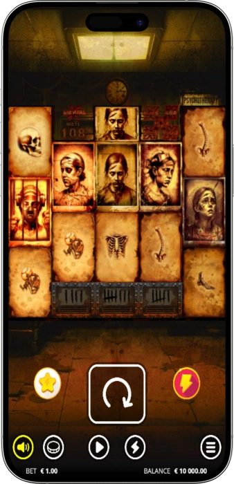

Exclusive welcome offer of
Exclusive welcome bonus of
Mental 2 — The Ultimate Horror Slot by Nolimit City
Top Casinos
Bonus Details
Casino
Bonuses
Rate
Free Spins
More Info
Get
Advantages
- Looking for one of the most extreme horror slots online? Mental 2 by Nolimit City delivers spine-chilling gameplay with a 99,999x max win, ultra-high volatility rated 12/10, and a full arsenal of xMechanic modifiers. Here's what makes Mental 2 stand out:
-
RTP up to 96.06% certified by independent testing labs
-
Max win of 99,999x your stake with God Mode trigger
-
3 bonus round tiers: Bloodletting, Surgery & Experimental
-
xHole, xMental & Fire Reels — next-gen xMechanic modifiers
-
Bonus Buy menu with 9 options including God Mode spin
-
HTML5 technology — instant play on any device, no download
- Mental 2 is certified by independent auditors for fair play with a hit frequency of 31.41% and a bonus round triggering once every 269 spins. Play responsibly and enjoy one of the most technically advanced slots from Nolimit City.
Mental 2 App



About Mental 2 by Nolimit City
Mental 2 is a high-volatility horror video slot by Nolimit City, the studio behind some of the most extreme online slots ever created. Built on the acclaimed original Mental, this sequel pushes every mechanic further with xHole, xMental, and Fire Reels.
- Released with 108 betways on a unique 3-2-3-2-3 grid
- Volatility rated 12/10 — highest in Nolimit City lineup
- God Mode symbol awards instant 99,999x max win
- Bonus Buy feature with 9 purchase options available
Mental 2 runs on certified HTML5 technology with RNG outcomes verified by independent testing laboratories. The game uses SSL-secured platforms and all results are provably random, ensuring fair play across every spin for real money players worldwide.
We continue bringing the most innovative slot mechanics to players globally. Mental 2 represents the pinnacle of Nolimit City's xMechanic portfolio. Try the free demo to explore all features before playing for real money at any licensed online casino.
Mental 2 Features & Bonus Rounds Guide
Mental 2 Slot Features & Bonus Rounds — Complete Guide
Mental 2 by Nolimit City is not your average online slot. This horror-themed video slot delivers one of the most complex xMechanic frameworks in the entire iGaming industry, combining Fire Frames, Fire Reels, Enhancer Cells, xHole, xMental, and three escalating bonus rounds into a single, cohesive gameplay experience. With 108 default ways to win on a unique 3-2-3-2-3 grid layout, every spin holds the potential to unlock mind-bending multiplier chains that can push your winnings toward the legendary 99,999x max win. Whether you are a seasoned high-volatility slot player or discovering Nolimit City's xMechanic portfolio for the first time, this guide walks you through every feature in detail.
Fire Frames & Fire Reels — The Core Mechanic
At the heart of Mental 2's gameplay engine sit Fire Frames and the newly introduced Fire Reels. Fire Frames can ignite up to 13 symbol positions at random during base game spins, and any symbol landing in a flaming position is immediately split in two — doubling the number of ways to win for that configuration. Fire Reels take this concept even further: up to all 5 reels can catch fire simultaneously, splitting every symbol on an affected reel into 3 separate instances and multiplying win ways exponentially. This dynamic system is the primary driver behind the slot's insane maximum win potential, as even a single Fire Reel activation can cascade into hundreds of thousands of winning combinations across the grid.
- Fire Frames: Ignite up to 13 positions at random, splitting symbols in affected spots into 2 instances and increasing ways to win accordingly. Multiple Fire Frames in a single spin can combine to create enormous win configurations.
- Fire Reels: When an entire reel catches fire, every symbol on that reel splits into 3. Fire Reels count as either 2 or 3 Fire Frames for the purpose of activating Enhancer Cells, depending on the number of positions involved.
- Persistent Fire (Bonus Rounds): During all three bonus round tiers, every Fire Frame and Fire Reel activated during the triggering spin becomes locked and persistent for the entire duration of the free spins, forming a dramatically enhanced multiplier environment from the very first free spin.
Enhancer Cells — The xMechanic Modifier Engine
Positioned below reels 2, 3, and 4, the three Enhancer Cells are directly tied to the number of active Fire Frames on any given spin. Activate 4 Fire Frames to unlock 1 Enhancer Cell; 6 Fire Frames for 2 cells; and a full 8 Fire Frames or more to trigger all 3 simultaneously. Each activated Enhancer Cell delivers one of four powerful xMechanic modifiers drawn from Nolimit City's signature arsenal, with the potential to stack modifiers from multiple cells in a single spin for truly explosive outcome chains. This modifier system is what elevates Mental 2 far above standard high-volatility slots.
- Wild Symbol: A classic but effective modifier — the Wild substitutes for any paying symbol on the grid, helping to complete winning combinations across all active betways.
- xSplit Symbol: One of the most dynamic modifiers in the game. The xSplit not only splits a target symbol on affected reels but also transforms itself into 2 Wild symbols, simultaneously increasing ways to win and plugging gaps in the paytable.
- xNudge Wild: Nudges to fill an entire reel with Wild symbols, adding +1 to the global win multiplier per nudge position. If an xSplit hits an xNudge Wild, the multiplier value receives an additional +1 boost — making this combination one of the most valuable modifier pairings in the slot.
- xWays Symbol: Expands the reel height by revealing 3 randomly chosen matching symbols, effectively adding an extra row of identical symbols. If multiple xWays symbols are active in the same spin, they all reveal the same symbol type for maximum win-way synergy.
xHole & xMental — The Signature New Features
Mental 2 introduces two brand-new mechanics not found in the original game: xHole and xMental. These two features represent the highest-tier modifier events available in the base game and can independently deliver massive payouts in a single spin. The xHole activates when the xHole symbol lands inside a Fire Frame or on a Fire Reel at the second-from-top position on the central reel (reel 3). Once triggered, the xHole mechanics vacuums all pay symbols and Wilds off the reels, then re-introduces them at amplified sizes of ×2, ×4, or ×8, dramatically compressing the grid and multiplying symbol counts. The biggest Mental 2 win ever recorded — a 99,999x multiplier — was triggered via an xHole activation combined with a Bonus Buy on a €0.20 base bet.
The xMental feature triggers when the xMental symbol lands inside a Fire Frame or Fire Reel, awarding an immediate extra spin in which all reel positions simultaneously catch fire, all 3 Enhancer Cells activate, and the probability of triggering xHole on that extra spin is significantly elevated. The xMental does not co-trigger with bonus round activations on the same spin, but as a base game modifier, it represents one of the highest single-spin win acceleration events in any Nolimit City title.
Dead Patients & Mental Transform Features
The Dead Patients mechanic activates when 2 or more Dead Patient premium symbols land simultaneously on the reels. The feature selects one of those symbols and reveals a symbol multiplier between ×5 and ×9,999 — a value that equals the total number of instances of that symbol currently on the grid. This is not a global win multiplier but a symbol-specific instance multiplier, meaning its value scales with how many copies of the symbol are present after all splits and expansions have resolved. Additionally, the Mental Transform feature triggers when Disembodied scatter symbols land on reels 2 and 4 simultaneously during the base game, converting those scatters into high-value symbols including xSplit, xWays, Dead Patient, Wilds, or regular Patient symbols — a transformation that can feed directly into Enhancer Cell activations.
Three Bonus Round Tiers — Bloodletting, Surgery & Experimental
Mental 2 features a tiered bonus round system with three escalating levels of intensity, all triggered by different combinations of Cognitive scatter symbols (reels 1, 3, 5) and Disembodied scatter symbols (reels 2, 4). Each bonus round tier maintains all persistent Fire Frames and Fire Reels from the triggering spin throughout the entire free spin sequence, creating a pre-loaded explosive environment from the very first free spin.
- Bloodletting Free Spins (8 spins): Triggered by 3 Cognitive scatters. The lowest-tier bonus, but still powerful thanks to persistent Fire Frames and Fire Reels. Landing a Disembodied scatter during Bloodletting upgrades the round to Surgery Spins. Each additional scatter landing in a Fire Frame awards +1 extra spin; scatters landing on a Fire Reel award +2 extra spins.
- Surgery Free Spins (8 spins): Triggered by 3 Cognitive + 1 Disembodied scatter. Adds a sticky Disembodied symbol that triggers Mental Transform on every subsequent spin. Introduces the Dead Multiplier — which collects the highest Dead Patient multiplier each spin and transfers it to new Patient symbols — making every spin in this tier exponentially more powerful than Bloodletting.
- Experimental Free Spins (highest tier): Triggered by 3 Cognitive + 2 Disembodied scatters. The Dead Multiplier does NOT decrease after transferring, meaning multipliers accumulate indefinitely across the free spin sequence. Both Disembodied symbols become sticky. This is the highest EV bonus round in Mental 2 and the primary source of the slot's legendary big win potential.
God Mode — The Ultimate Win Trigger
The God Mode feature is the rarest and most spectacular event in Mental 2. It activates when the xGOD symbol lands on each of the 5 reels simultaneously during a base game spin, immediately awarding the absolute maximum win of 99,999× your current stake — with no further spins, calculations, or conditions required. The xGOD symbol, inspired by the Hannibal Lecter-type character from the original Mental, appears prominently throughout the game's narrative and artwork. God Mode can also be purchased via the Bonus Buy menu for 6,666× your stake, giving eligible players a direct route to attempting the maximum win.
Mental 2 Bonus Buy Options
For players in eligible markets (Bonus Buy is not available in the UK), Mental 2 offers one of the most comprehensive purchase menus in the Nolimit City catalog. Nine distinct purchase options allow players to tailor their session intensity, from low-cost enhancers to premium direct bonus round access. All prices are expressed as multipliers of the current base bet.
| Feature | Cost | Reward |
|---|---|---|
| xBet | 1.4× | Guaranteed Cognitive scatter on reel 1 |
| Full Fire | 6× | Fire Frames on all positions |
| xHole Buy | 99× | Triggers xHole feature |
| xMental Buy | 3,200× | Triggers xMental feature |
| God Mode | 6,666× | GOD MODE spin for max win attempt |
| Bloodletting FS | 100× | 8–14 Bloodletting Free Spins |
| Surgery FS | 250× | 9–17 Surgery Free Spins |
| Experimental FS | 1,800× | 10–20 Experimental Free Spins |
| Lucky Draw | 330× | Random bonus (50/40/10% split) |
How to Play Mental 2 for Real Money
Playing Mental 2 for real money is straightforward on any licensed online casino platform offering Nolimit City content. The game accepts bets from €0.20 to €100 per spin, giving it broad accessibility across bankroll sizes. Given the extreme 12/10 volatility rating — the highest on Nolimit City's internal scale — we strongly recommend starting with the minimum bet to explore the mechanics before scaling up. The bonus round triggers approximately once every 269 spins on average, meaning sessions can be lengthy before the free spins activate organically. Using the xBet option at 1.4× your bet is the most cost-efficient way to improve scatter frequency without committing to a full Bonus Buy purchase.
Software Providers
Mental 2 RTP, Volatility & Strategy Guide
Mental 2 RTP, Volatility, Paytable & Responsible Play
Mental 2 by Nolimit City sits in an elite category of online slot machines defined by extreme statistical profiles and uncompromising design philosophy. Understanding the math model behind this horror slot is essential before committing real money stakes — particularly given its unprecedented volatility rating of 12 out of 10, a figure Nolimit City themselves describe as beyond their standard scale. This section covers the complete RTP breakdown, paytable values, hit frequency data, volatility implications, and a framework for responsible bankroll management that every player should review before launching Mental 2 for real money.
Mental 2 RTP — What Does 95.23% Mean for Players?
The default RTP (Return to Player) of Mental 2 is 95.23%, which represents the theoretical long-term return of €95.23 for every €100 wagered across millions of spins. However, the certified RTP under optimal base game conditions reaches 96.06%, and the game carries a "96% RTP" tag in several casino lobbies globally. It is critical to understand that RTP figures apply to statistical averages across enormous sample sizes — individual sessions can and do deviate dramatically from these numbers, especially in a slot with Mental 2's extreme volatility profile. Always verify which RTP version your casino platform uses, as lower RTP variants (below 95%) exist in certain regulated markets.
- Base RTP: 95.23% — The standard version available at most online casino platforms worldwide offering Nolimit City content. Certified by independent testing labs.
- Optimal RTP: 96.06% — Available at select platforms; represents the highest-return version of the game and should be prioritised by players who are RTP-conscious in their casino selection.
- RTP Ranges: Mental 2 features RTP range flexibility, meaning operators can configure the return percentage within a regulated band. Always check the in-game information panel for the exact RTP active on your session.
- Bonus Contribution: A significant portion of Mental 2's RTP is concentrated in the bonus round events (Experimental Free Spins in particular), meaning the majority of the game's theoretical return is delivered through infrequent, high-impact bonus activations rather than base game hits.
Volatility Rating — 12 Out of 10
Mental 2 carries a volatility rating of 12 out of 10 on Nolimit City's internal volatility scale — a score that exceeds the maximum of the scale itself and signals an intentionally extreme risk-reward profile. In practical terms, this means that losing streaks of 200–400 spins without a significant win are statistically normal within a Mental 2 session. The game is engineered around infrequent but catastrophically large payouts rather than steady, frequent medium wins. The hit frequency stands at 31.41%, meaning approximately 31 out of every 100 spins return any win — but the vast majority of these base game hits are small relative to the bet size. The genuine value of Mental 2 is concentrated in rare bonus round activations, particularly Experimental Free Spins, where the non-decreasing Dead Multiplier can compound to astronomical levels.
Mental 2 Paytable — Symbol Values
The paytable in Mental 2 reflects the horror asylum theme, with the disturbed young girl protagonist populating the premium symbol tier and skeletal imagery filling the lower-value positions. All symbol values are expressed as multipliers of the total bet per spin for 5-of-a-kind wins across the 108 default betways.
| Symbol | Type | 5OAK |
|---|---|---|
| Patient (High) | Premium | 2.5× |
| Patient (Mid) | Premium | 2.0× |
| Patient (Low) | Premium | 1.0× |
| Skeleton (High) | Low | 0.75× |
| Skeleton (Low) | Low | 0.5× |
| xGOD Symbol | Special | 99,999× (God Mode) |
How Does Mental 2 Compare to the Original Mental?
Mental 2 is a direct sequel to the original Mental slot, one of Nolimit City's most iconic releases. While both games share the same 3-2-3-2-3 grid structure and 108 default betways, Mental 2 improves on virtually every statistical and mechanical metric. The max win has jumped from the original's already impressive figure to 99,999×, while the max win hit rate has improved — now occurring approximately once every 16 million spins. Mental 2 adds Fire Reels (absent in the original), a third Enhancer Cell, and the entirely new xHole and xMental features. The volatility has also increased from the original's already extreme level, cementing Mental 2's reputation as one of the most brutal high-variance online slot machines available at any licensed casino globally.
Responsible Gambling & Bankroll Management
Given Mental 2's extreme volatility profile, responsible gambling tools and disciplined bankroll management are not optional — they are essential. Nolimit City and all licensed casino operators offering Mental 2 provide a suite of player protection tools designed to keep gaming enjoyable and within healthy boundaries. We strongly encourage all players to utilise these features before and during their sessions.
- Set a Session Budget: Determine the maximum amount you are comfortable losing before starting any Mental 2 session. Given the 12/10 volatility, bankrolls of at least 200–300× the minimum bet are recommended for meaningful session length at the €0.20 minimum stake.
- Use Deposit Limits: All reputable licensed online casinos offer daily, weekly, and monthly deposit limits. Setting these before playing Mental 2 prevents impulsive over-spending during losing streaks that are statistically inevitable with this variance level.
- Reality Check Feature: Enable the reality check timer, which sends periodic reminders of how long you have been playing. This is particularly important in Mental 2, where the immersive horror atmosphere and feature anticipation can distort the perception of time.
- Self-Exclusion Tools: If gambling stops being entertainment, licensed casinos provide self-exclusion options ranging from temporary cooling-off periods to permanent account closure. Support organisations including GamCare, BeGambleAware, and Gamblers Anonymous offer free assistance globally.
- Avoid Chasing Losses: The 99,999× max win occurs statistically once in every 16 million spins. Increasing bet sizes after losing streaks in an attempt to recover losses is a high-risk behaviour that can accelerate bankroll depletion without improving the probability of triggering God Mode or any bonus feature.
- Bonus Buy Caution: While the Experimental Free Spins Bonus Buy at 1,800× your stake offers direct access to the highest EV bonus round, it represents a significant bet multiplier. Only use Bonus Buy features if the cost is comfortably within your pre-set session budget and you fully understand that the outcome remains subject to RNG.
Where to Play Mental 2 Online
Mental 2 is available at hundreds of licensed online casinos worldwide that carry the Nolimit City games portfolio. The slot is currently accessible in 49 countries, with the highest availability in Finland, New Zealand, Norway, and Austria. When choosing a casino to play Mental 2 for real money, prioritise platforms that display the highest available RTP version (96.06%), offer the full Bonus Buy menu in your jurisdiction, and hold a valid licence from a recognised regulatory authority such as MGA, UKGC, or Curaçao eGaming. Always verify responsible gambling certifications and available player protection tools before making your first deposit.
Frequently Asked Questions
Mental 2 has a default RTP of 95.23%, with an optimal version reaching 96.06% at select casino platforms. RTP figures represent long-term statistical averages. Always check the in-game info panel for the exact RTP version active at your casino.
The maximum win in Mental 2 is 99,999× your stake, achieved via the God Mode feature when the xGOD symbol lands on all 5 reels simultaneously. This event occurs approximately once every 16 million spins and can also be attempted via the God Mode Bonus Buy at 6,666× your stake.
Land 3 Cognitive scatters on reels 1, 3, and 5 to trigger Bloodletting Free Spins (8 spins). Add 1 Disembodied scatter for Surgery Spins, or 2 Disembodied scatters for Experimental Spins — the highest EV bonus tier with a non-decreasing Dead Multiplier. Bonus Buy is available in eligible markets.
The xHole feature triggers when the xHole symbol appears inside a Fire Frame or Fire Reel on the second-from-top position of reel 3. It vacuums all pay symbols and Wilds from the grid, then re-places them at ×2, ×4, or ×8 boosted sizes — dramatically increasing win ways and multiplier potential.
Yes, Mental 2 offers 9 Bonus Buy options including direct access to all three bonus rounds, xHole, xMental, and God Mode purchases. However, Bonus Buy is not available in the United Kingdom due to UKGC regulations. Check your local casino platform to confirm availability in your country.
Mental 2 is rated 12 out of 10 on Nolimit City's internal volatility scale — exceeding the maximum of their own scale. This makes it one of the most volatile online slots available anywhere. Long losing streaks between significant wins are statistically normal. Always play at low stakes and set firm budget limits.
Yes, Mental 2 is available in free demo mode at multiple online casino review platforms without requiring registration or a real money deposit. The demo uses virtual credits and allows full exploration of all features including Fire Frames, Enhancer Cells, xHole, and all three bonus round tiers.
Mental 2 is built on HTML5 technology and runs natively in all modern web browsers on desktop, tablet, and mobile devices including iOS and Android smartphones. No download or app installation is required — simply launch the game directly in your browser at any licensed casino supporting Nolimit City content.